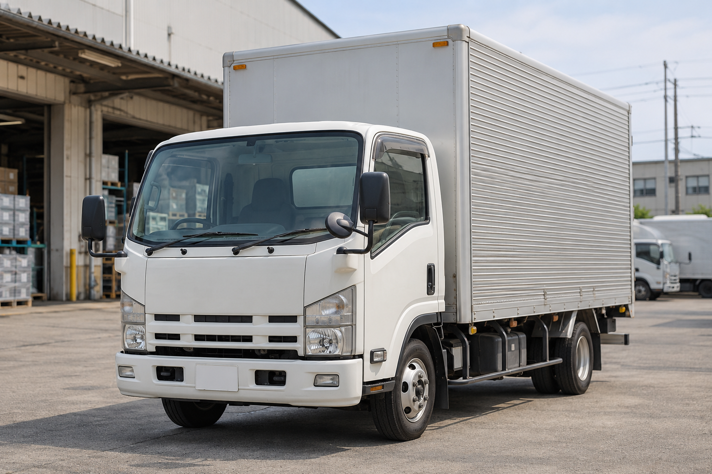
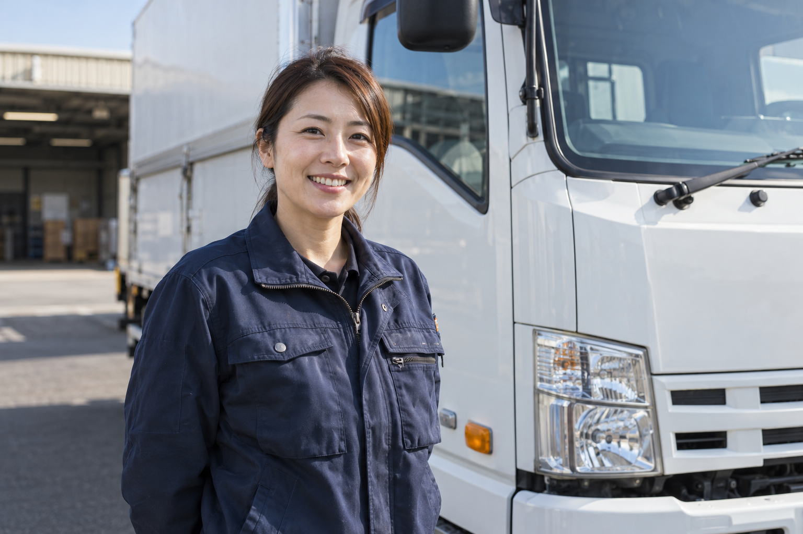
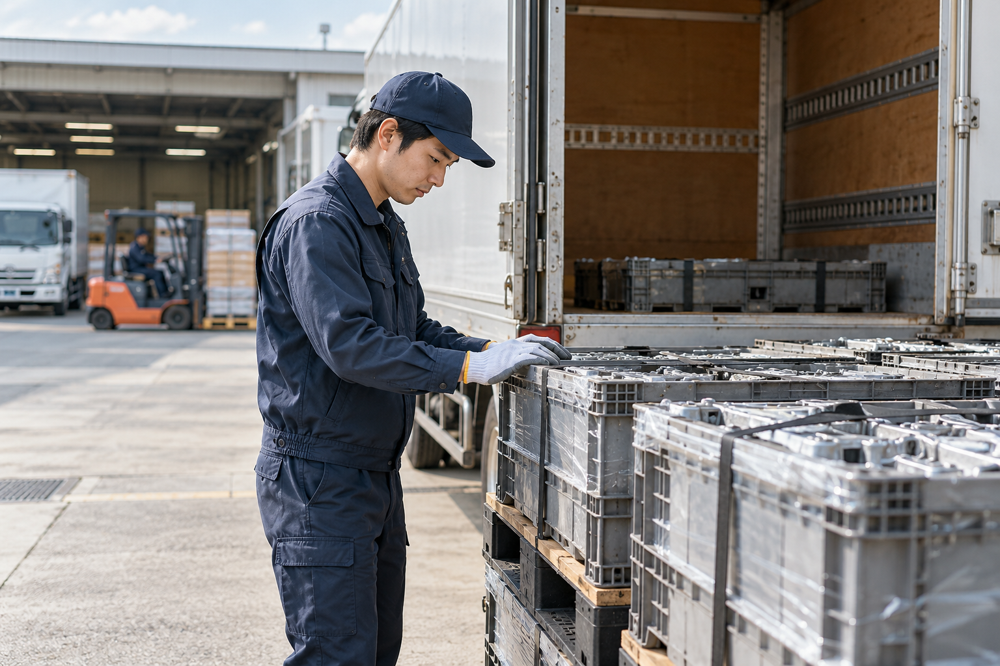
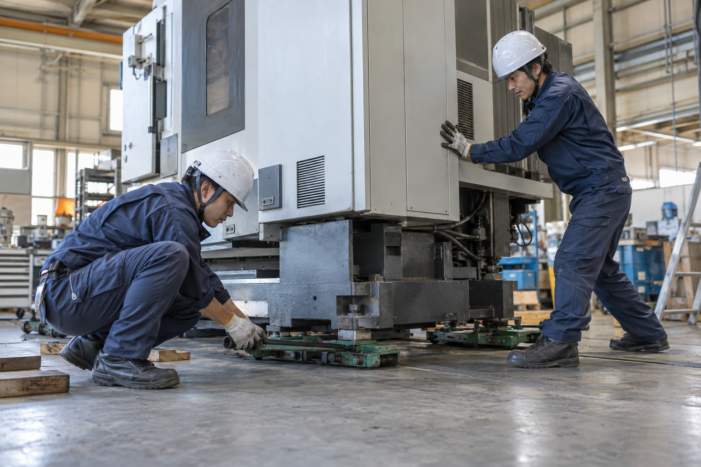
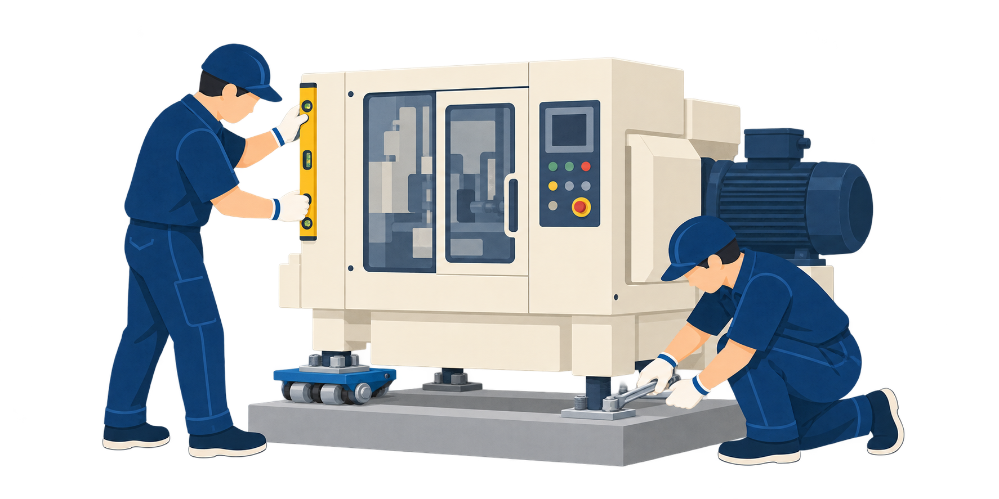
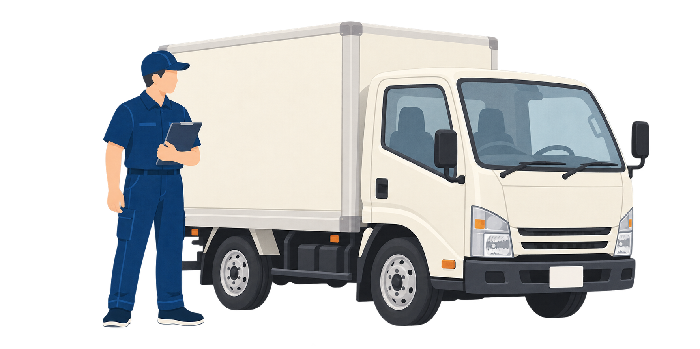
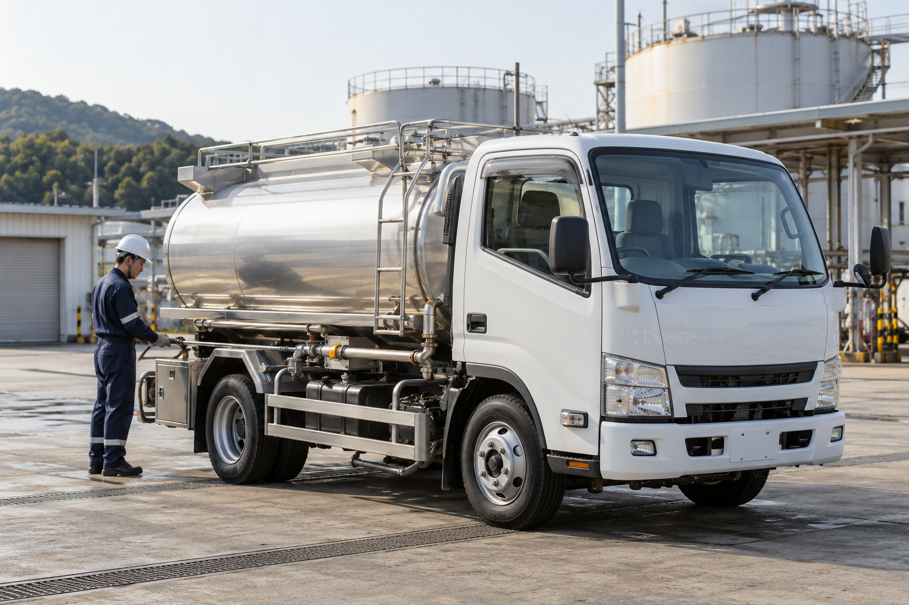
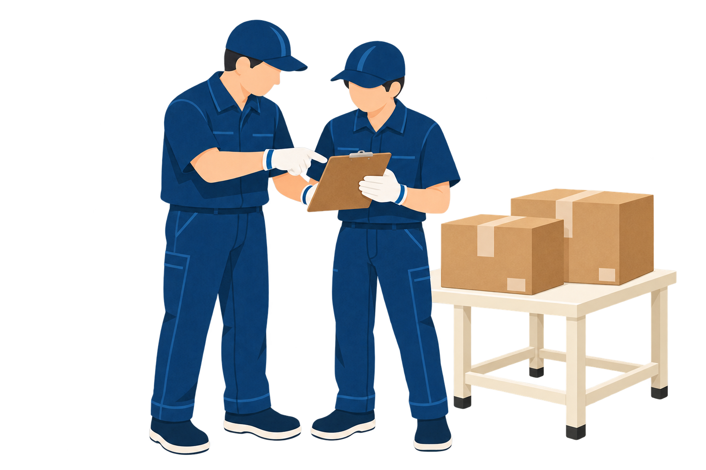
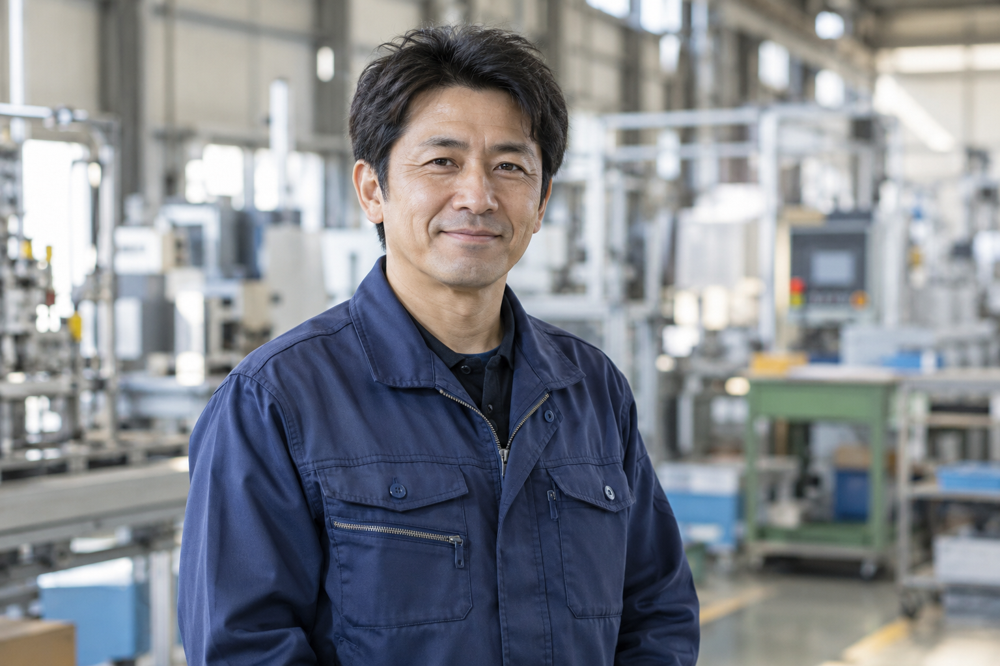
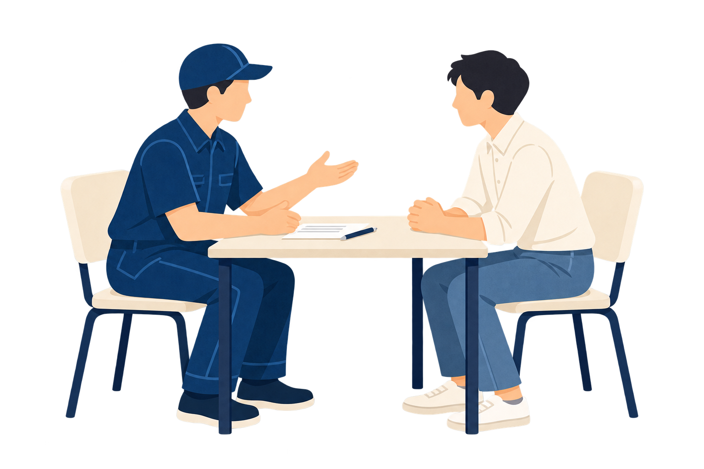

AI生成イメージ
01 重量物の搬入・機械設備の設置
大きな機械や設備を現場へ運び入れ、据え付ける仕事です。これまでに、地下鉄車両の搬入、病院のMRIの搬出入、新聞社の輪転機更新など、さまざまな搬入・設置作業を担当。配送とは異なる専門技術で、設備の導入や更新を支えます。
搬入・設置スタッフ／配送ドライバー募集
仕事も、暮らしも大事にしたい。
そんなあなたに合う働き方を、宇徳組で。


AI生成イメージ
AI生成イメージ
AI生成イメージ
AI生成イメージ宇徳組の歩みは、1923年に開設された宇都宮徳蔵回漕店の名古屋出張所にさかのぼります。当時から、重工業に関わる重量物や設備の輸送・据付を担当。1930年の名古屋宇徳組設立、1951年の法人化を経て、貨物運送と機械設備の搬入・設置を担う会社へ。
名古屋を拠点に、産業を支える仕事を重ねてきました。
宇徳組は、名古屋を拠点に「重量物の搬入・機械設備の設置」と、「自動車部品・オイルなどの配送」を手がける会社です。設備を据え付ける作業から、日々の物流まで。2つの事業でお客様の現場を支えています。
大きな機械や設備を現場へ運び入れ、据え付ける仕事です。これまでに、地下鉄車両の搬入、病院のMRIの搬出入、新聞社の輪転機更新など、さまざまな搬入・設置作業を担当。配送とは異なる専門技術で、設備の導入や更新を支えます。
トラックやタンクローリーで、お客様のもとへ自動車部品やオイルなどを届けます。決まったルートでの配送が中心。継続的な取引が、安定した仕事量につながっています。
東山グループとのつながりを機に、これまでの歩みを大切にしながら、次の一歩へ。
長く培ってきた経験に、新しい力を。会社のこれからを担う仲間を募ります。
働く環境の整備も、今後のテーマ。具体的な計画は、決まり次第お伝えします。
地域とお客様とのつながりを大切に。グループとの歩みを、次の可能性へ。
搬入・設置と配送。仕事内容を知ることから、自分に合う仕事選びを。

大きな設備が動き出す、その前に。重量物を運び込み、機械設備を据え付ける仕事。鉄道車両や医療機器などの搬入実績があります。現場の仕事や機械に関心がある方へ。
現在の作業内容・資格・出張範囲：確認後に掲載

身近な部品を届ける、物流の担い手に。2tトラックで、自動車部品の配送に関わる仕事です。自分の届けた部品が、その先の仕事を動かす。
車や物流への関心を、毎日の仕事にしませんか。
必要免許・配送先・荷扱い：確認後に掲載
4tのハンドルで、次の仕事を支える。自動車部品の物流を担う4tドライバー。
配送の経験や免許を、これからどう活かしたいか。実際のルートや勤務条件と照らして考えてみてください。
必要免許・配送先・荷扱い：確認後に掲載

AI生成イメージオイルを運ぶ。現場の稼働を支える。タンクローリーによる輸送を担う仕事です。
運ぶものの特性に向き合い、確実に届ける。専門性のある輸送に関心がある方へ。
取扱品・必要資格・募集状況：確認後に掲載

時間の使い方も、人との関わり方も。長く働くために大切なこと。
配送は長距離運転・夜勤・交代勤務なし。
具体的な勤務時間は、職種別の募集要項で。
決まったルートの配送を中心に、お客様を支えます。
配送先や荷扱いまで知って、仕事のイメージを。

AI生成イメージ一人ひとりのコミュニケーションの取り方を尊重。
安全のための確認や連携を大切にしながら働きます。
女性ドライバーも活躍中。先輩の実際の働き方を紹介。
1日の流れや入社のきっかけを、先輩の言葉で。
入社年［要確認］
何を大切にして、この会社を選んだのか。仕事と自分の時間を、どう両立しているのか。
［ここにご本人の回答を掲載］※実際の発言・体験談は取材後に反映します。
入社年［要確認］
入社前に気になっていたこと。実際に働いて感じたこと、慣れるまでのこと。
［ここにご本人の回答を掲載］※実際の発言・体験談は取材後に反映します。
入社年［要確認］
日々の仕事で大切にしていること。長く働くなかで、変わったこと・変わらないこと。
［ここにご本人の回答を掲載］※実際の発言・体験談は取材後に反映します。
入社年［要確認］
搬入・設置は、どんなふうに進めるのか。作業の難しさや、やりがいを感じる瞬間。
［ここにご本人の回答を掲載］※実際の発言・体験談は取材後に反映します。
仕事内容や働き方について、気になることをご相談ください。
仕事内容・条件について気になることはありますか？
募集について相談・応募する愛知県トラック協会を通じた、小学校での出前授業にも参加しています。
子どもたちに、働く車や物流の仕事を伝える。日々の配送の先に、地域とのつながりがあります。
内容・回数・必要書類は要確認
内容・回数・必要書類は要確認
内容・回数・必要書類は要確認
［職種別の受け入れ条件・教育体制を確認し、ご案内します］
［車両・作業ごとの必要免許と取得時期による違いを確認し、ご案内します］
はい。宇徳組では女性ドライバーも活躍しています。先輩社員の紹介もご覧ください。

「自分に合う仕事かな？」と思ったら、気になることをお聞かせください。
愛知県トラック協会の掲載情報をもとに作成しています。
掲載内容は宇徳組様への確認後に確定します。